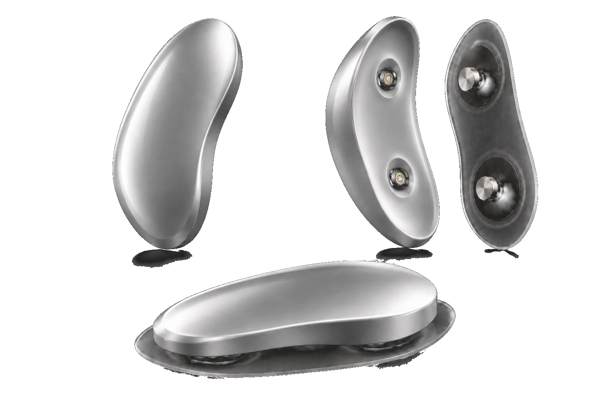

Senses your brain
Sleep happens in your brain, not your wrist. So that’s where Droyma listens.

Sleep deeper. Do bigger things.
Sleep happens in your brain, not your wrist. So that’s where Droyma listens.
Deep sleep is when you recover. A soft sound only you can hear helps you go deeper.
Every brain is different. So every night, Droyma adjusts to yours.
WHY IT MATTERS
It improves your sleep while it's happening.
Every pulse lands at the right moment for you.
Deep sleep is when your brain saves the day.
No mattress, no hub. Home or hotel.


A NIGHT WITH DROYMA
10:30 PM
Droyma senses you winding down and gently helps you settle in.
12:40 AM
On each slow wave, a soft sound helps you sleep deeper.
2:30 AM
Droyma goes quiet.
4:30 AM
Droyma picks up where it left off.
6:45 AM
You wake up clear.
PERSONAL TO YOU
Every night, Droyma gets to know you a little better. So every night, you sleep a little better.
Illustrative first month. Not measured Droyma data.

THE NEXT MORNING
Fully restored, and ready to take on more.
THE MOMENT
Every goal, every ambition, every big day. At your best.
THE SCIENCE
Soft sound, timed to your brain, helps you fall asleep faster, strengthens deep sleep and improves memory. Three studies, the same method Droyma uses.
Soft sound, timed to the brain's pre-sleep rhythm.
Soft clicks, timed to the rise of each deep-sleep wave.
Pulses of soft pink noise, timed to each deep-sleep wave.
In the two deep-sleep studies, deep-sleep waves grew stronger during the sound.
Results from published sleep studies, not Droyma measurements or guaranteed outcomes. The 2024 study is a preprint, not yet peer reviewed.
WHY SLEEP MATTERS
Sleep is the ultimate biomarker of cognitive performance.
Shortchange those 26 years, and the other 54 pay for it.
In deep sleep your brain moves in slow waves. Droyma senses them from behind your ear and answers each one with a brief, soft pulse of acoustic stimulation, which helps it run deeper. Sleep labs have studied this method for over a decade.
The stimulation travels through bone rather than the air. It's designed to be soft enough to sleep through, and not to fill the room.
Droyma is designed to sit behind your ear all night, with no band or headset. Comfort testing is part of development before launch.
Droyma uses soft acoustic stimulation at low intensity, the approach studied in sleep labs. It's still in development and will be tested before it ships.
Load is how tired you are going to bed. Sleep is how well you actually rested. Charge is how ready your brain is for the day. Each runs from 0 to 100, and Droyma learns what moves them for you.
WHOOP tracks your body. Eight Sleep changes your bed's temperature. Melatonin is a supplement. Droyma senses your brain and responds while you sleep, drug-free. It works alongside the others.
Droyma is in development. The waitlist hears first about early access and pricing. Joining is free.
Show up to tomorrow at your best.